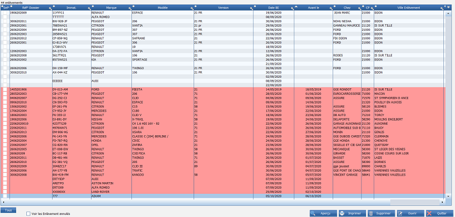

Les enlèvements
Lorsque vous avez fait un bon d'enlèvement (BE) mais que le véhicule n'est pas encore au parc, vous pouvez tout de même en garder la trace.
Ajoutez un véhicule au parc, et remplissez les cases relatives aux enlèvements. Indiquez également la date du BE et la date limite d'enlèvement. Lorsque vous avez rempli tout le nécessaire, quittez la page sans ajouter le véhicule au parc.
Cela a pour effet de cataloguer le véhicule comme "à enlever".
Vous avez ensuite la possibilité de retrouver la liste de ces enlèvements en cliquant sur Gestion des dossiers depuis le menu principal puis sur Liste des enlèvements. Vous avez également la possibilité de transformer directement un appel d'offre en bon d'enlèvement.


Les dossiers dont la date limite est dépassée apparaissent en rouge et ceux dont elle est proche en orange. Cliquez sur un dossier pour le modifier, et donc, pour l'ajouter au parc une fois l'enlèvement accompli. Il disparaitra alors de cette liste des enlèvements à réaliser.